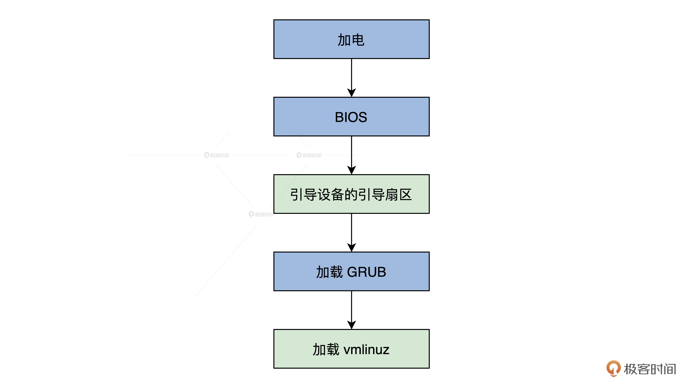
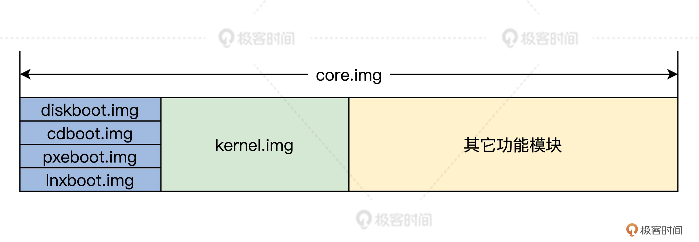
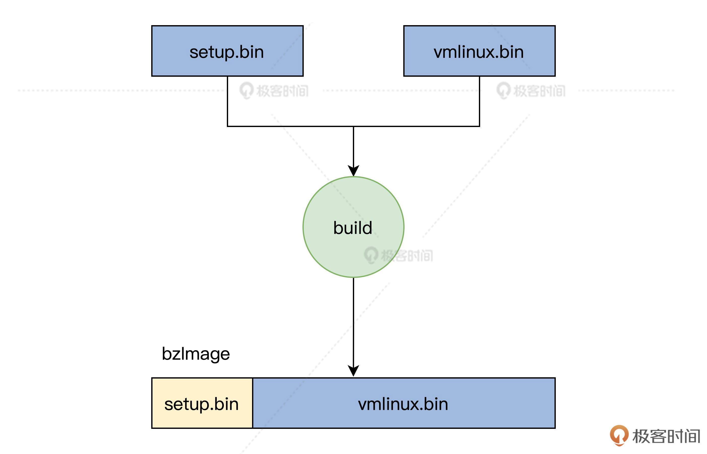

- 00 开篇词 为什么要学写一个操作系统？.md
- 00 编辑手记 升级认知，迭代自己的操作系统.md
- 01 程序的运行过程：从代码到机器运行.md
- 02 几行汇编几行C：实现一个最简单的内核.md
- 03 黑盒之中有什么：内核结构与设计.md
- 04 震撼的Linux全景图：业界成熟的内核架构长什么样？.md
- 05 CPU工作模式：执行程序的三种模式.md
- 06 虚幻与真实：程序中的地址如何转换？.md
- 07 Cache与内存：程序放在哪儿？.md
- 08 锁：并发操作中，解决数据同步的四种方法.md
- 09 瞧一瞧Linux：Linux的自旋锁和信号量如何实现？.md
- 10 设置工作模式与环境（上）：建立计算机.md
- 11 设置工作模式与环境（中）：建造二级引导器.md
- 12 设置工作模式与环境（下）：探查和收集信息.md
- 13 第一个C函数：如何实现板级初始化？.md
- 14 Linux初始化（上）：GRUB与vmlinuz的结构.md
- 15 Linux初始化（下）：从_start到第一个进程.md
- 16 划分土地（上）：如何划分与组织内存？.md
- 17 划分土地（中）：如何实现内存页面初始化？.md
- 18 划分土地（下）：如何实现内存页的分配与释放？.md
- 19 土地不能浪费：如何管理内存对象？.md
- 20 土地需求扩大与保障：如何表示虚拟内存？.md
- 21 土地需求扩大与保障：如何分配和释放虚拟内存？.md
- 22 瞧一瞧Linux：伙伴系统如何分配内存？.md
- 23 瞧一瞧Linux：SLAB如何分配内存？.md
- 24 活动的描述：到底什么是进程？.md
- 25 多个活动要安排（上）：多进程如何调度？.md
- 26 多个活动要安排（下）：如何实现进程的等待与唤醒机制？.md
- 27 瞧一瞧Linux：Linux如何实现进程与进程调度_.md
- 28 部门分类：如何表示设备类型与设备驱动？.md
- 29 部门建立：如何在内核中注册设备？.md
- 30 部门响应：设备如何处理内核I_O包？.md
- 31 瞧一瞧Linux：如何获取所有设备信息？.md
- 32 仓库结构：如何组织文件_.md
- 33 仓库划分：文件系统的格式化操作.md
- 34 仓库管理：如何实现文件的六大基本操作？.md
- 35 瞧一瞧Linux：虚拟文件系统如何管理文件？.md
- 36 从URL到网卡：如何全局观察网络数据流动？.md
- 37 从内核到应用：网络数据在内核中如何流转.md
- 38 从单排到团战：详解操作系统的宏观网络架构.md
- 39 瞧一瞧Linux：详解socket实现与网络编程接口.md
- 40 瞧一瞧Linux：详解socket的接口实现.md
- 41 服务接口：如何搭建沟通桥梁？.md
- 42 瞧一瞧Linux：如何实现系统API？.md
- 43 虚拟机内核：KVM是什么？.md
- 44 容器：如何理解容器的实现机制？.md
- 45 ARM新宠：苹果的M1芯片因何而快？.md
- 46 AArch64体系：ARM最新编程架构模型剖析.md
- LMOS来信：第二季课程带你“手撕”计算机基础.md
- 大咖助场 以无法为有法，以无限为有限.md
- 用户故事 yiyang：我的上机实验“爬坑指南”.md
- 用户故事 成为面向“知识库”的工程师.md
- 用户故事 技术人如何做选择，路才越走越宽？.md
- 用户故事 操作系统发烧友：看不懂？因为你没动手.md
- 用户故事 用好动态调试，助力课程学习.md
- 用户故事 艾同学：路虽远，行则将至.md
- 结束语 生活可以一地鸡毛，但操作系统却是心中的光.md
14 Linux初始化（上）：GRUB与vmlinuz的结构
你好，我是LMOS。
在前面的课程中，我们建好了二级引导器，启动了我们的Cosmos，并进行了我们Cosmos的Hal层初始化。
我会用两节课带你领会Linux怎样做初始化。虽然我们自己具体实现过了初始化，不过我们也不妨看看Linux的初始化流程，借鉴一下Linux开发者的玩法。
这节课，我会先为你梳理启动的整体流程，重点为你解读Linux上GRUB是怎样启动，以及内核里的“实权人物”——vmlinuz内核文件是如何产生和运转的。下节课，我们从setup.bin文件的_start函数入手，研究Linux初始化流程。
好，接下来我们从全局流程讲起，正式进入今天的学习。
全局流程
x86平台的启动流程，是非常复杂的。为了帮助你理解，我们先从全局粗略地看一看整体流程，然后一步步细化。
在机器加电后，BIOS会进行自检，然后由BIOS加载引导设备中引导扇区。在安装有Linux操作系统的情况下，在引导扇区里，通常是安装的GRUB的一小段程序（安装windows的情况则不同）。最后，GRUB会加载Linux的内核映像vmlinuz，如下图所示。

上图中的引导设备通常是机器中的硬盘，但也可以是U盘或者光盘甚至是软盘。BIOS会自动读取保存在CMOS中的引导设备信息。
从BIOS到GRUB
从前面的课程我们已经知道，CPU被设计成只能运行内存中的程序，没有办法直接运行储存在硬盘或者U盘中的操作系统程序。
如果想要运行硬盘或者U盘中的程序，就必须要先加载到内存（RAM）中才能运行。这是因为硬盘、U盘（外部储存器）并不和CPU直接相连，它们的访问机制和寻址方式与内存截然不同。
内存在断电后就没法保存数据了，那BIOS又是如何启动的呢？硬件工程师设计CPU时，硬性地规定在加电的瞬间，强制将CS寄存器的值设置为0XF000，IP寄存器的值设置为0XFFF0。
这样一来，CS:IP就指向了0XFFFF0这个物理地址。在这个物理地址上连接了主板上的一块小的ROM芯片。这种芯片的访问机制和寻址方式和内存一样，只是它在断电时不会丢失数据，在常规下也不能往这里写入数据，它是一种只读内存，BIOS程序就被固化在该ROM芯片里。
现在，CS:IP指向了0XFFFF0这个位置，正是BIOS程序的入口地址。这意味着BIOS正式开始启动。
BIOS一开始会初始化CPU，接着检查并初始化内存，然后将自己的一部分复制到内存，最后跳转到内存中运行。BIOS的下一步就是枚举本地设备进行初始化，并进行相关的检查，检查硬件是否损坏，这期间BIOS会调用其它设备上的固件程序，如显卡、网卡等设备上的固件程序。
当设备初始化和检查步骤完成之后，BIOS会在内存中建立中断表和中断服务程序，这是启动Linux至关重要的工作，因为Linux会用到它们。
具体是怎么操作的呢？BIOS会从内存地址（0x00000）开始用1KB的内存空间（0x00000~0x003FF）构建中断表，在紧接着中断表的位置，用256KB的内存空间构建BIOS数据区（0x00400~0x004FF），并在0x0e05b的地址加载了8KB大小的与中断表对应的中断服务程序。
中断表中有256个条目，每个条目占用4个字节，其中两个字节是CS寄存器的值，两个字节是IP寄存器的值。每个条目都指向一个具体的中断服务程序。
为了启动外部储存器中的程序，BIOS会搜索可引导的设备，搜索的顺序是由CMOS中的设置信息决定的（这也是我们平时讲的，所谓的在BIOS中设置的启动设备顺序）。一个是软驱，一个是光驱，一个是硬盘上，还可以是网络上的设备甚至是一个usb 接口的U盘，都可以作为一个启动设备。
当然，Linux通常是从硬盘中启动的。硬盘上的第1个扇区（每个扇区512字节空间），被称为MBR（主启动记录），其中包含有基本的GRUB启动程序和分区表，安装GRUB时会自动写入到这个扇区，当MBR被BIOS装载到0x7c00地址开始的内存空间中后，BIOS就会将控制权转交给了MBR。在当前的情况下，其实是交给了GRUB。
到这里，BIOS到GRUB的过程结束。
GRUB是如何启动的
根据前面内容可以发现，BIOS只会加载硬盘上的第1个扇区。不过这个扇区仅有512字节，这512字节中还有64字节的分区表加2字节的启动标志，很显然，剩下446字节的空间，是装不下GRUB这种大型通用引导器的。
于是，GRUB的加载分成了多个步骤，同时GRUB也分成了多个文件，其中有两个重要的文件boot.img和core.img，如下所示：
其中，boot.img被GRUB的安装程序写入到硬盘的MBR中，同时在boot.img文件中的一个位置写入core.img文件占用的第一个扇区的扇区号。
而core.img文件是由GRUB安装程序根据安装时环境信息，用其它GRUB的模块文件动态生成。如下图所示：

如果是从硬盘启动的话，core.img中的第一个扇区的内容就是diskboot.img文件。diskboot.img文件的作用是，读取core.img中剩余的部分到内存中。
由于这时diskboot.img文件还不识别文件系统，所以我们将core.img文件的全部位置，都用文件块列表的方式保存到diskboot.img文件中。这样就能确保diskboot.img文件找到core.img文件的剩余内容，最后将控制权交给kernel.img文件。
因为这时core.img文件中嵌入了足够多的功能模块，所以可以保证GRUB识别出硬盘分区上文件系统，能够访问/boot/grub目录，并且可以加载相关的配置文件和功能模块，来实现相关的功能，例如加载启动菜单、加载目标操作系统等。
正因为GRUB2大量使用了动态加载功能模块，这使得core.img文件的体积变得足够小。而GRUB的core.img文件一旦开始工作，就可以加载Linux系统的vmlinuz内核文件了。
详解vmlinuz文件结构
我们在/boot目录下会发现vmlinuz文件，这个文件是怎么来的呢？
其实它是由Linux编译生成的bzImage文件复制而来的，你自己可以下载最新的Linux代码.
我们一致把Linux源码解压到一个linux目录中，也就是说我们后面查找Linux源代码文件总是从linux目录开始的，切换到代码目录执行make ARCH=x86_64，再执行make install，就会产生vmlinuz文件，你可以参考后面的makefile代码。
#linux/arch/x86/boot/Makefile
install: sh $(srctree)/$(src)/install.sh $(KERNELRELEASE) $(obj)/bzImage \ System.map "$(INSTALL_PATH)"
install.sh脚本文件只是完成复制的功能，所以我们只要搞懂了bzImage文件结构，就等同于理解了vmlinuz文件结构。
那么bzImage文件又是怎么来的呢？我们只要研究bzImage文件在Makefile中的生成规则，就会恍然大悟，代码如下 ：
#linux/arch/x86/boot/Makefile
$(obj)/bzImage: $(obj)/setup.bin $(obj)/vmlinux.bin $(obj)/tools/build FORCE $(call if_changed,image) @$(kecho) 'Kernel: $@ is ready' ' (#'`cat .version`')'
从前面的代码可以知道，生成bzImage文件需要三个依赖文件：setup.bin、vmlinux.bin，linux/arch/x86/boot/tools目录下的build。让我们挨个来分析一下。
其实，build只是一个HOSTOS（正在使用的Linux）下的应用程序，它的作用就是将setup.bin、vmlinux.bin两个文件拼接成一个bzImage文件，如下图所示：

剩下的就是搞清楚setup.bin、vmlinux.bin这两个文件的的结构，先来看看setup.bin文件，setup.bin文件是由objcopy命令根据setup.elf生成的。
setup.elf文件又怎么生成的呢？我们结合后面的代码来看看。
#这些目标文件正是由/arch/x86/boot/目录下对应的程序源代码文件编译产生
setup-y += a20.o bioscall.o cmdline.o copy.o cpu.o cpuflags.o cpucheck.o
setup-y += early_serial_console.o edd.o header.o main.o memory.o
setup-y += pm.o pmjump.o printf.o regs.o string.o tty.o video.o
setup-y += video-mode.o version.o
#……
SETUP_OBJS = $(addprefix $(obj)/,$(setup-y))
#……
LDFLAGS_setup.elf := -m elf_i386 -T$(obj)/setup.elf: $(src)/setup.ld $(SETUP_OBJS) FORCE $(call if_changed,ld)
#……
OBJCOPYFLAGS_setup.bin := -O binary$(obj)/setup.bin: $(obj)/setup.elf FORCE $(call if_changed,objcopy)
根据这段代码，不难发现setup.bin文件正是由/arch/x86/boot/目录下一系列对应的程序源代码文件编译链接产生，其中的head.S文件和main.c文件格外重要，别急，这个我之后会讲。
下面我们先看看vmlinux.bin是怎么产生的，构建vmlinux.bin的规则依然在linux/arch/x86/boot/目录下的Makefile文件中，如下所示：
#linux/arch/x86/boot/Makefile
OBJCOPYFLAGS_vmlinux.bin := -O binary -R .note -R .comment -S$(obj)/vmlinux.bin: $(obj)/compressed/vmlinux FORCE $(call if_changed,objcopy)
这段代码的意思是，vmlinux.bin文件依赖于linux/arch/x86/boot/compressed/目录下的vmlinux目标，下面让我们切换到linux/arch/x86/boot/compressed/目录下继续追踪。打开该目录下的Makefile，会看到如下代码。
#linux/arch/x86/boot/compressed/Makefile
#……
#这些目标文件正是由/arch/x86/boot/compressed/目录下对应的程序源代码文件编译产生$(BITS)取值32或者64
vmlinux-objs-y := $(obj)/vmlinux.lds $(obj)/kernel_info.o $(obj)/head_$(BITS).o \ $(obj)/misc.o $(obj)/string.o $(obj)/cmdline.o $(obj)/error.o \ $(obj)/piggy.o $(obj)/cpuflags.o
vmlinux-objs-$(CONFIG_EARLY_PRINTK) += $(obj)/early_serial_console.o
vmlinux-objs-$(CONFIG_RANDOMIZE_BASE) += $(obj)/kaslr.o
ifdef CONFIG_X86_64
vmlinux-objs-y += $(obj)/ident_map_64.o
vmlinux-objs-y += $(obj)/idt_64.o $(obj)/idt_handlers_64.o vmlinux-objs-y += $(obj)/mem_encrypt.o
vmlinux-objs-y += $(obj)/pgtable_64.o
vmlinux-objs-$(CONFIG_AMD_MEM_ENCRYPT) += $(obj)/sev-es.o
endif
#……
$(obj)/vmlinux: $(vmlinux-objs-y) $(efi-obj-y) FORCE
$(call if_changed,ld)
结合这段代码我们发现，linux/arch/x86/boot/compressed目录下的vmlinux是由该目录下的head_32.o或者head_64.o、cpuflags.o、error.o、kernel.o、misc.o、string.o 、cmdline.o 、early_serial_console.o等文件以及piggy.o链接而成的。
其中，vmlinux.lds是链接脚本文件。在没做任何编译动作前，前面依赖列表中任何一个目标文件的源文件（除了piggy.o源码），我们几乎都可以在Linux内核源码里找到。
比如说，head_64.o对应源文件head_64.S、string.o对应源文件string.c、misc.o对应源文件misc.c等。
那么问题来了，为啥找不到piggy.o对应的源文件，比如piggy.c、piggy.S或其他文件呢？你需要在Makefile文件仔细观察一下，才能发现有个创建文件piggy.S的规则，代码如下所示：
#linux/arch/x86/boot/compressed/Makefile
#……
quiet_cmd_mkpiggy = MKPIGGY $@
cmd_mkpiggy = $(obj)/mkpiggy $< > $@
targets += piggy.S
$(obj)/piggy.S: $(obj)/vmlinux.bin.$(suffix-y) $(obj)/mkpiggy FORCE $(call if_changed,mkpiggy)
看到上面的规则，我们豁然开朗，原来piggy.o是由piggy.S汇编代码生成而来，而piggy.S是编译Linux内核时由mkpiggy工作（HOST OS下的应用程序）动态创建的，这就是我们找不到它的原因。
piggy.S的第一个依赖文件vmlinux.bin.$(suffix-y)中的suffix-y，它表示内核压缩方式对应的后缀。
#linux/arch/x86/boot/compressed/Makefile
#……
vmlinux.bin.all-y := $(obj)/vmlinux.bin
vmlinux.bin.all-$(CONFIG_X86_NEED_RELOCS) += $(obj)/vmlinux.relocs
$(obj)/vmlinux.bin.gz: $(vmlinux.bin.all-y) FORCE
$(call if_changed,gzip)
$(obj)/vmlinux.bin.bz2: $(vmlinux.bin.all-y) FORCE
$(call if_changed,bzip2)
$(obj)/vmlinux.bin.lzma: $(vmlinux.bin.all-y) FORCE
$(call if_changed,lzma)
$(obj)/vmlinux.bin.xz: $(vmlinux.bin.all-y) FORCE
$(call if_changed,xzkern)
$(obj)/vmlinux.bin.lzo: $(vmlinux.bin.all-y) FORCE
$(call if_changed,lzo)
$(obj)/vmlinux.bin.lz4: $(vmlinux.bin.all-y) FORCE
$(call if_changed,lz4)
$(obj)/vmlinux.bin.zst: $(vmlinux.bin.all-y) FORCE
$(call if_changed,zstd22)
suffix-$(CONFIG_KERNEL_GZIP) := gz
suffix-$(CONFIG_KERNEL_BZIP2) := bz2
suffix-$(CONFIG_KERNEL_LZMA) := lzma
suffix-$(CONFIG_KERNEL_XZ) := xz
suffix-$(CONFIG_KERNEL_LZO) := lzo
suffix-$(CONFIG_KERNEL_LZ4) := lz4
suffix-$(CONFIG_KERNEL_ZSTD) := zst
由前面内容可以发现，Linux内核可以被压缩成多种格式。虽然现在我们依然没有搞清楚vmlinux.bin文件是怎么来的，但是我们可以发现，linux/arch/x86/boot/compressed目录下的Makefile文件中，有下面这样的代码。
#linux/arch/x86/boot/compressed/Makefile
#……
OBJCOPYFLAGS_vmlinux.bin := -R .comment -S
$(obj)/vmlinux.bin: vmlinux FORCE
$(call if_changed,objcopy)
也就是说，arch/x86/boot/compressed目录下的vmlinux.bin，它是由objcopy工具通过vmlinux目标生成。而vmlinux目标没有任何修饰前缀和依赖的目标，这说明它就是最顶层目录下的一个vmlinux文件。
我们继续深究一步就会发现，objcopy工具在处理过程中只是删除了vmlinux文件中“.comment”段，以及符号表和重定位表（通过参数-S指定），而vmlinux文件的格式依然是ELF格式的，如果不需要使用ELF格式的内核，这里添加“-O binary”选项就可以了。
我们现在来梳理一下，vmlinux文件是如何创建的。
其实，vmlinux文件就是编译整个Linux内核源代码文件生成的，Linux的代码分布在各个代码目录下，这些目录之下又存在目录，Linux的kbuild（内核编译）系统，会递归进入到每个目录，由该目录下的Makefile决定要编译哪些文件。
在编译完具体文件之后，就会在该目录下，把已经编译了的文件链接成一个该目录下的built-in.o文件，这个built-in.o文件也会与上层目录的built-in.o文件链接在一起。
再然后，层层目录返回到顶层目录，所有的built-in.o文件会链接生成一个vmlinux文件，这个vmlinux文件会通过前面的方法转换成vmlinux.bin文件。但是请注意，vmlinux.bin文件它依然是ELF格式的文件。
最后，工具软件会压缩成vmlinux.bin.gz文件，这里我们以gzip方式压缩。
让我们再次回到mkpiggy命令，其中mkpiggy是内核自带的一个工具程序，它把输出方式重定向到文件，从而产生piggy.S汇编文件，源码如下：
int main(int argc, char *argv[]){
uint32_t olen;
long ilen;
FILE *f = NULL;
int retval = 1;
f = fopen(argv[1], "r");
if (!f) {
perror(argv[1]);
goto bail;
}
//……为节约篇幅略去部分代码
printf(".section \".rodata..compressed\",\"a\",@progbits\n");
printf(".globl z_input_len\n");
printf("z_input_len = %lu\n", ilen);
printf(".globl z_output_len\n");
printf("z_output_len = %lu\n", (unsigned long)olen);
printf(".globl input_data, input_data_end\n");
printf("input_data:\n");
printf(".incbin \"%s\"\n", argv[1]);
printf("input_data_end:\n");
printf(".section \".rodata\",\"a\",@progbits\n");
printf(".globl input_len\n");
printf("input_len:\n\t.long %lu\n", ilen);
printf(".globl output_len\n");
printf("output_len:\n\t.long %lu\n", (unsigned long)olen);
retval = 0;
bail:
if (f)
fclose(f);
return retval;
}
//由上mkpiggy程序“写的”一个汇编程序piggy.S。
.section ".rodata..compressed","a",@progbits
.globl z_input_len
z_input_len = 1921557
.globl z_output_len
z_output_len = 3421472
.globl input_data,input_data_end
.incbin "arch/x86/boot/compressed/vmlinux.bin.gz"
input_data_end:
.section ".rodata","a",@progbits
.globl input_len
input_len:4421472
.globl output_len
output_len:4424772
根据上述代码不难发现，这个piggy.S非常简单，使用汇编指令incbin将压缩的vmlinux.bin.gz毫无修改地包含进来。
除了包含了压缩的vmlinux.bin.gz内核映像文件外，piggy.S中还定义了解压vmlinux.bin.gz时需要的各种信息，包括压缩内核映像的长度、解压后的长度等信息。
这些信息和vmlinux.bin.gz文件，它们一起生成了piggy.o文件，然后piggy.o文件和\((vmlinux-objs-y)\)(efi-obj-y)中的目标文件一起链接生成，最终生成了linux/arch/x86/boot/compressed目录下的vmlinux。
说到这里，你是不是感觉，这和Linux的启动流程无关呢？有这种想法就大错特错了，要想搞明白Linux的启动流程，首先得搞懂它vmlinuz的文件结构。有了这些基础，才能知其然同时知其所以然。
重点回顾
又到了课程尾声，这节课的学习我们就告一段落了，我来给你做个总结。
今天我们首先从全局梳理了一遍x86平台的启动流程，掌握了BIOS加载GRUB的过程，又一起学习了BIOS是如何启动的，它又是如何加载引导设备的。
接着我们研究了GRUB的启动流程，BIOS加载了GRUB的第一个部分，这一部分加载了GRUB的其余部分。
最后，我们详细了解了Linux内核的启动文件vmlinuz的结构，搞清楚了它的生成过程。
思考题
请问，为什么要用C代码mkpiggy程序生成piggy.S文件，并包含vmlinux.bin.gz文件呢？
欢迎你在留言区记录你的收获和疑问，也欢迎你把这节课分享给有需要的朋友，跟他一起学习进步。
好，我是LMOS，我们下节课见！
© 2019 - 2023 Liangliang Lee. Powered by gin and hexo-theme-book.